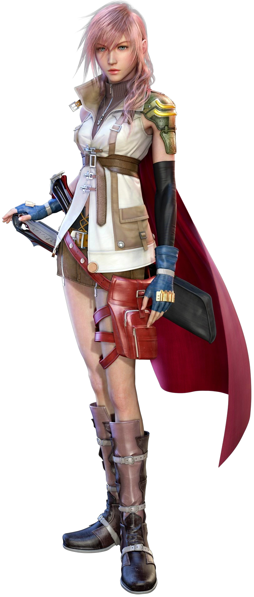
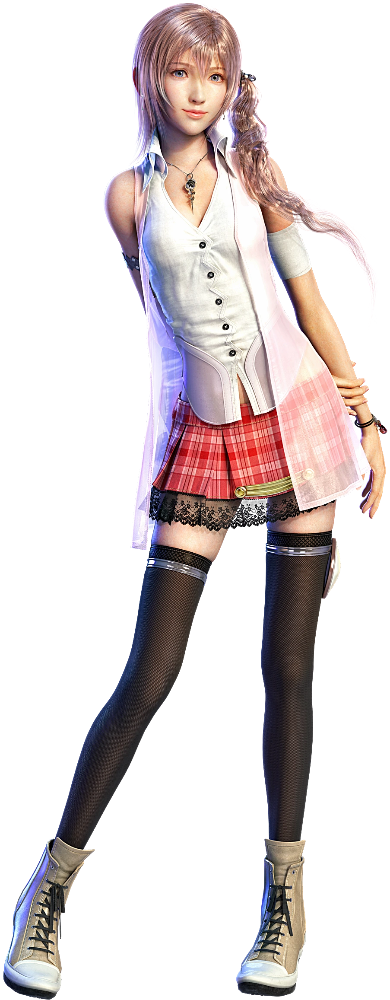
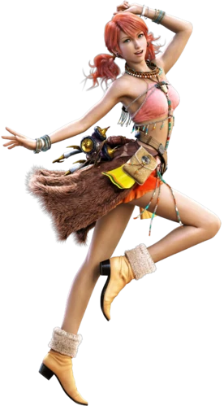
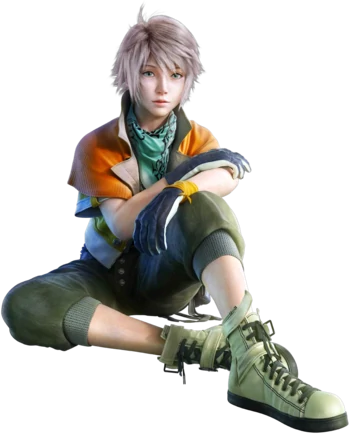
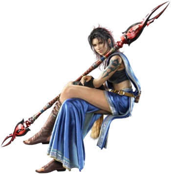
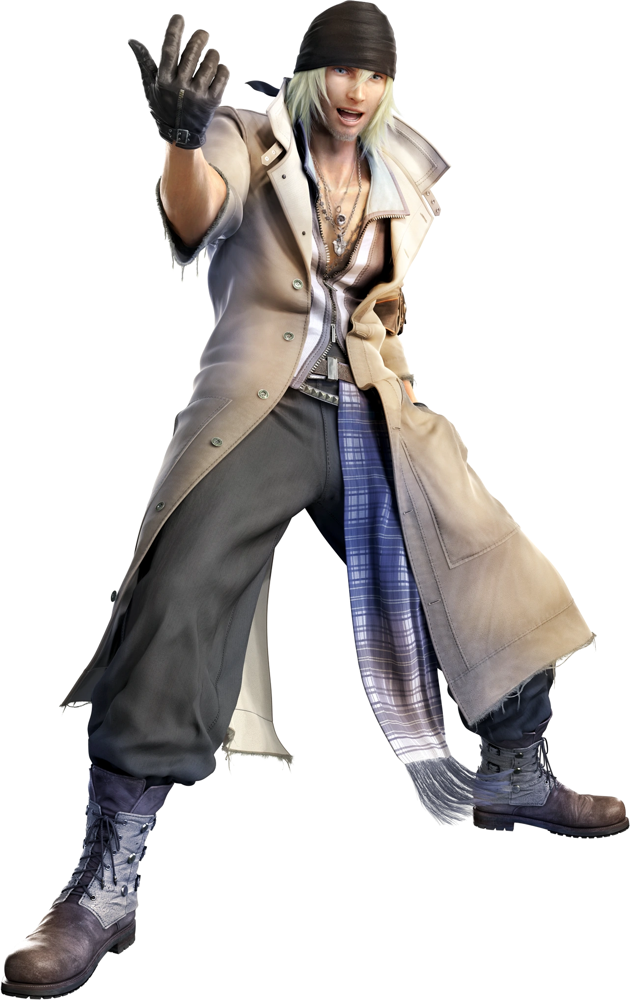
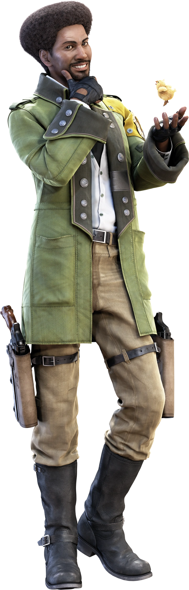

Lightning FarronLightning is determined, concentrated, and independent. She's initially cold and detached, distancing herself from her companions, only looking out for herself, and not caring if others get left behind. Lightning's perception of failing to protect Serah drives her, leading her to lash out at those she believes are responsible for her fate |
|
Serah Farron |
Oerba Dia Vanille |
Hope Estheim |
Oerba Yun Fang |
Snow Villiers |
Sazh Katzroy |